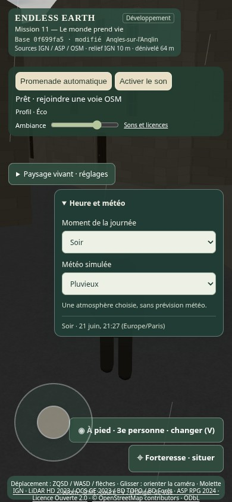

Captures du véritable moteur à Angles-sur-l’Anglin. Même position, même orientation, même date UTC et même profil. La comparaison ne constitue pas une validation artistique humaine.
Jalon A seulement. Les gains et les ressources sonores de la Mission 10.1 restent conservés. L’enrichissement acoustique attend votre validation.
Ouvrir la promenade indépendante · Lire le rapport · Mesures après · Mesures avant · Tests des commandes
Ensoleillé → couvert → pluie → nuit → matin ensoleillé. Capture de la boucle réelle, environ 24 secondes, sans accélération. La fréquence de capture est basse sous rendu logiciel SwiftShader. Vidéo muette ; aucune écoute humaine revendiquée.

Tests dans Chromium avec SwiftShader, pas sur un téléphone Android physique. Les nuages sont des couches procédurales légères ; leur relief reste une interprétation. Ni lune, ni éclairs, ni simulation volumétrique coûteuse.